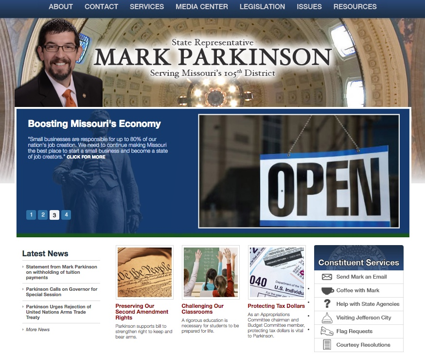

My Work
I've been pretty fortunate to work on some interesting projects. Here are just a few.
Course Projects
As I finish up my nanodegree through Udacity, I will put finished projects on this site, displaying a fuller range of my new skills. The code for all projects (besides My Reads) can be found in my GitHub Udacity-FEND repo.
-
My Reads (designed with React; in process of building for Github Pages--so the main link goes to the Github repo)--Using a provided API, My Reads is a library app that allows you to:
- Keep track of all books currently in your library, organized by books that you are currently reading, books that you have already read, and books that you want to read;
- Switch those books around at will from shelf to shelf; and
- Using the API's pre-determined listing of books, be able to search through the listing by title or author, find any books matching the search terms, and add them to a shelf of your choosing.
- River Runner--A modern take on the classic game Frogger, River Runner makes you run as quickly as possible from the starting point to the river. But beware--there are bugs that are determined to keep you from getting there.
- Memory Game--A variation of the classic memory/match games of the past. Try to match up 8 pairs of symbols--not just as accurately as possible, but as quickly as possible too!
- Feedreader Testing--In this project, you do not build the simple RSS feed reader. That's provided for you. What you do accomplish, however, is building the testing suites (using the Jasmine framework) that will ensure the feed reader is functioning as intended.
- Pixel Art Maker--In this project, you build a simple pixel art maker. Give it a height and width, choose your color, and begin working on becoming the next digital Picasso!
State Representative Mark Parkinson
(political viewpoints and leanings of past projects do not always reflect my own)
{kind=link}
Click image for full resolution version
From 2008-2009 and 2011-2016, I served as the jack of all trades for Missouri State Representative Mark Parkinson of St. Charles. Almost every legislator in the Missouri House of Representatives (unless they are leadership) is only allowed one staff member to handle everything they face. Constituent relations. Legislative research. Communications. Scheduling and office management. You wear many hats as a staffer. In this role, one of the roles I took on was web developer. I built his official website entirely from scratch, incorporating several features that went well above and beyond what is required of Missouri legislators. From putting office expenses out in the open to using technology to streamline several processes such as courtesy resolutions, and incorporating social media where possible, our office led the way in embracing new and innovative ways to use technology to reach the people Representative Parkinson was elected to serve.
The code was lost on this, so I am in the process of rebuilding it using web archive services to match the original code.